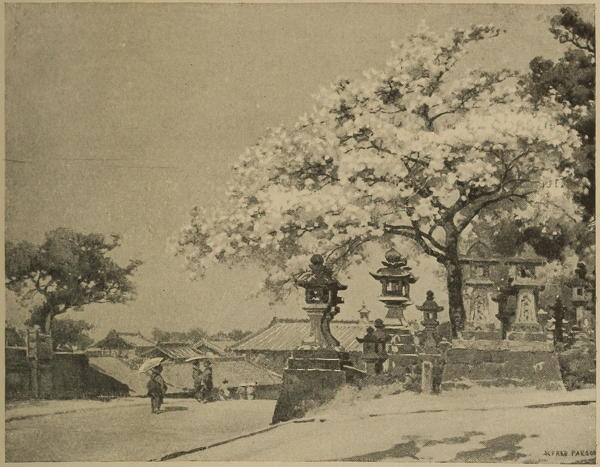

“Cherry-tree and lanterns, Ni-gwatsu-dō, Nara”
Notes in Japan (1896)
As night fell we reached the ancient town of Nara, the capital of this country from the sixth to the seventh century of our era, still the sacred city, whose temple contains the largest bronze Buddha in Japan. The moonlight was streaming through the avenues of cryptomerias and fir trees, and over the heavy-roofed gables of the temples, as we wound our way, followed by our jinrikshas, up the rocky path, disturbing the sacred deer lying under the splendid old trees (one cryptomeria measured thirty-six feet round) to the tea house close to the principal temple. But alas! the pilgrims had filled it, every mat was taken, and we had to turn our weary steps—twenty-six miles’ jolting in a jinriksha is somewhat fatiguing—down the glen again, and finally found refuge at midnight in a tea-house in the town.
Journal of a Lady’s Travels Round the World (1883)
The Buddha [at Nara] was ... well worth a visit. The actual image is fifty-seven feet high, and seated on an enormous lotus flower. It is made of small plates of bronze, and the comparatively modern head is surrounded by a halo of gilded wood. It is much more effective than the one we saw in Kyoto, the figure being complete, but both evidently lack the artistic beauty of the famous one at Kamakura, not far from Tokyo. We had not sufficient time to visit that Buddha while at Tokyo, but even from photographs could tell that its face possessed a dignity and characteristic self-concentration of expression which was wholly lacking in those at Kyoto and Nara.
Japan As We Saw It (Bickersteth) (1893)
◀ NagasakiNikko ▶